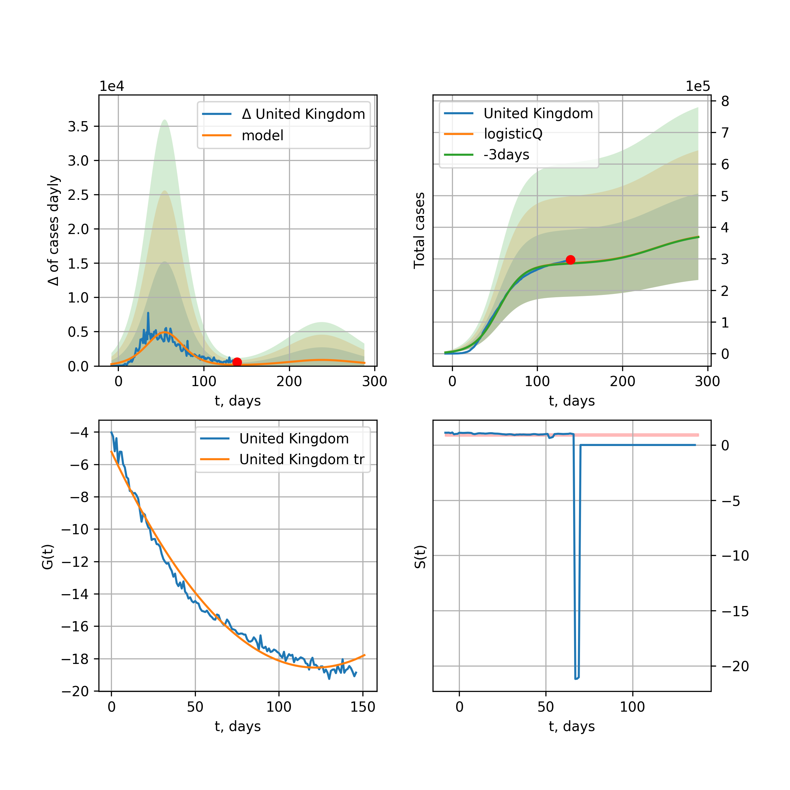
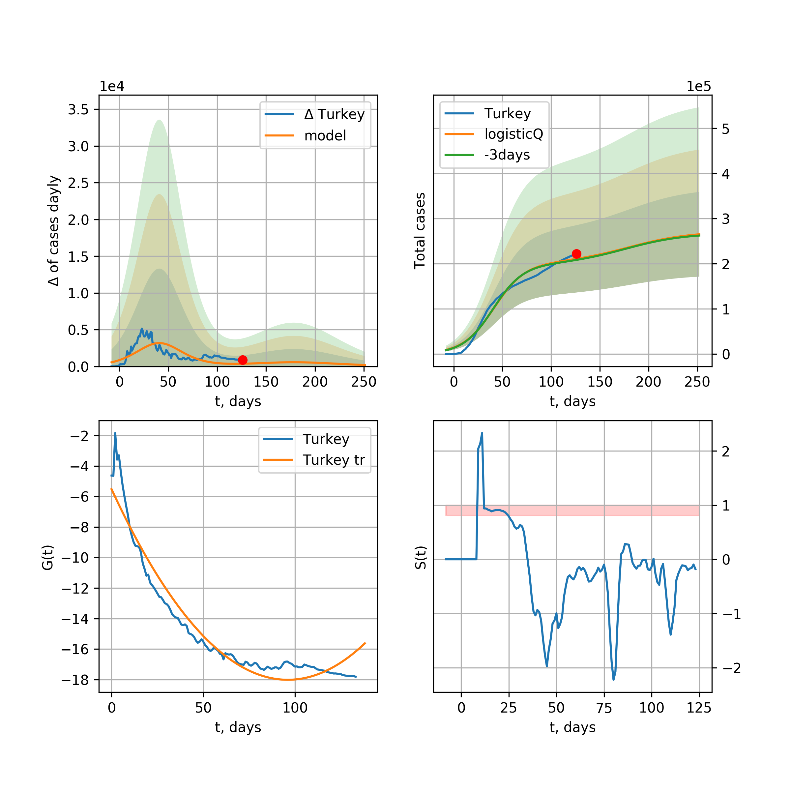
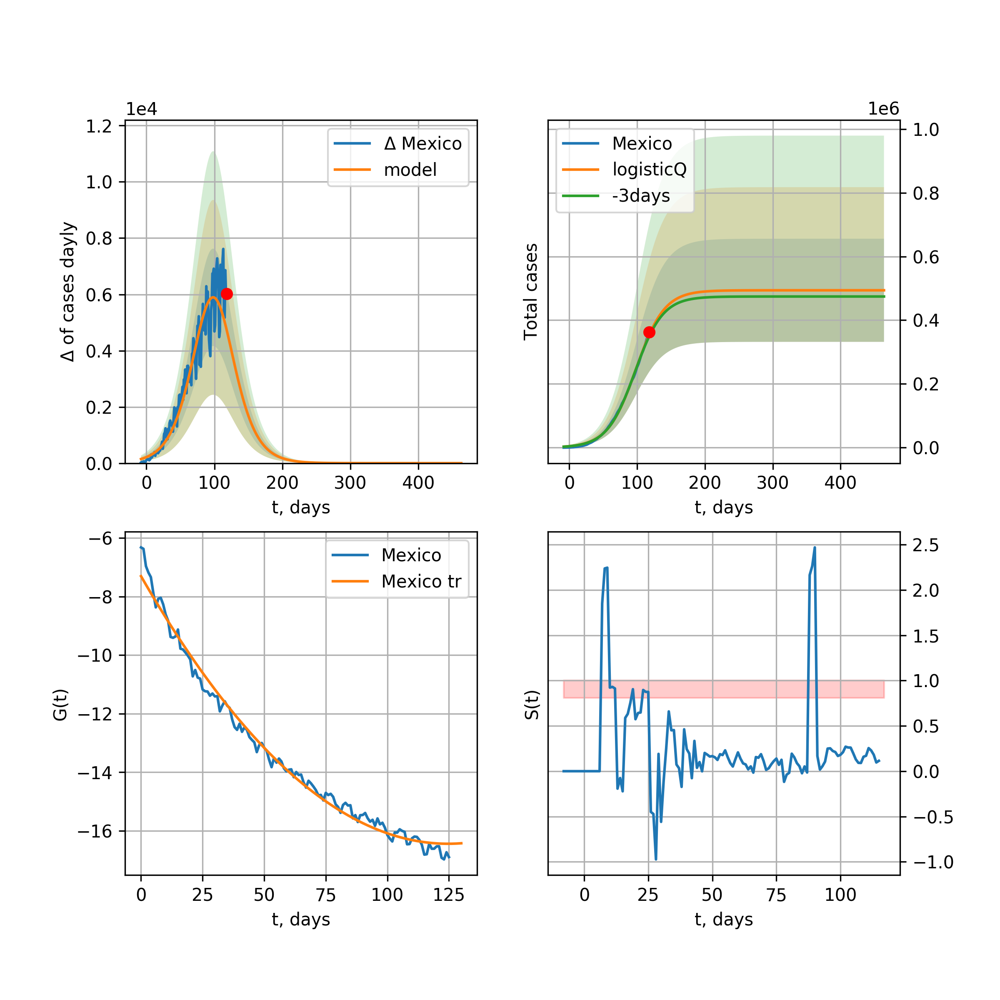
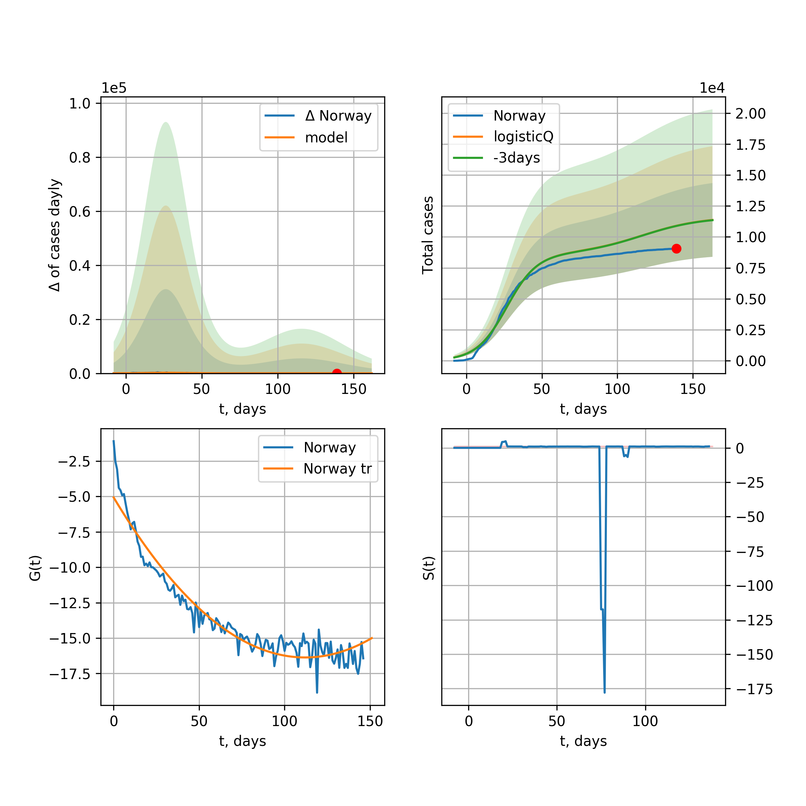
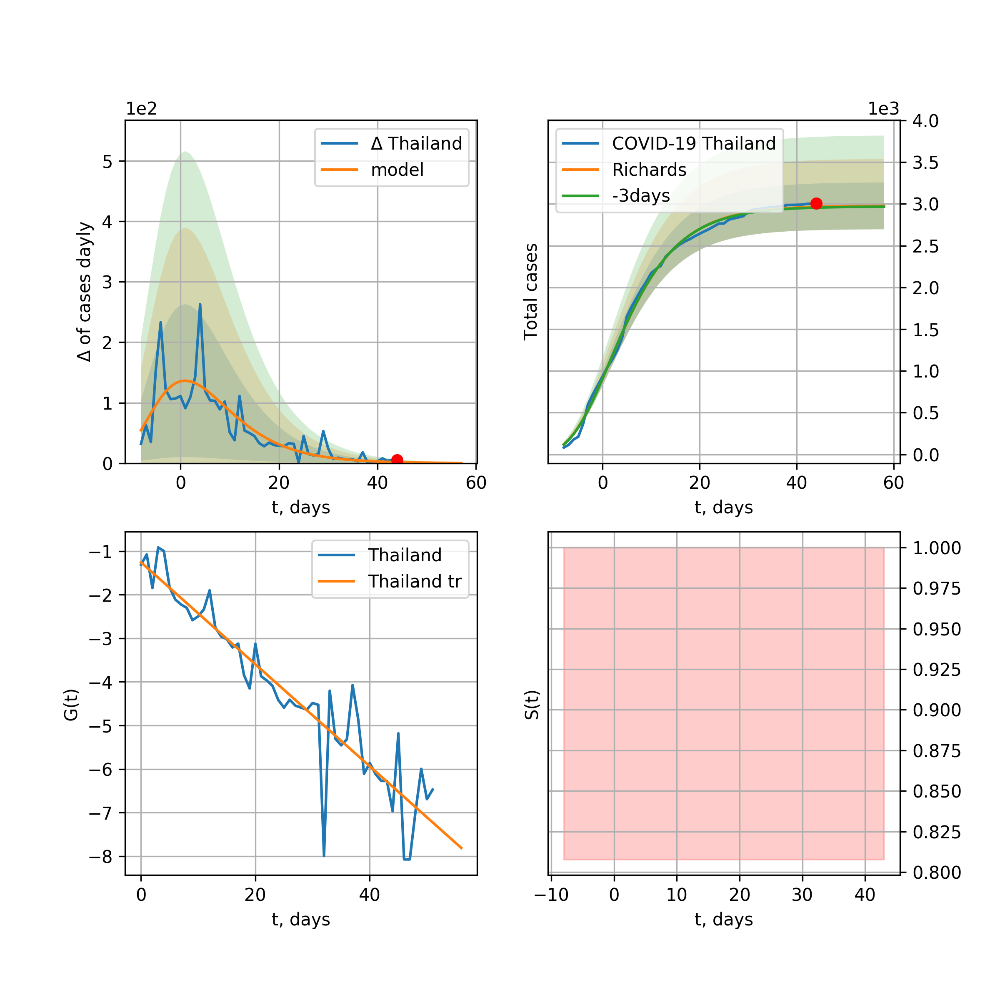
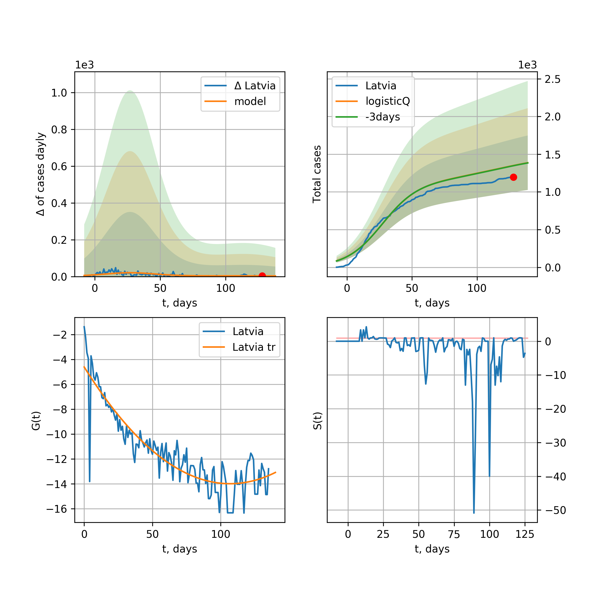

Multi-logistic model of COVID-19 dynamics
Model, code, results
Project maintained by algmaknick Hosted on GitHub Pages — Theme by mattgraham
World

World data at: 2020-05-02
+3 day model MAPE: 0.048859
model: bi-logisticQ
coeffs: [ 3.20431708e+06 2.25355163e-06 7.11307283e+01 -5.62102041e+04]
S.Korea scenario coeffs: [0.35416971, 0.02606324, 4.35859408, 19.30413219]
rational stdev: 0.126913
forecast at the end of period: +315 days
deltaDaycases: 185
total cases: 4744773 ± 602173
total death: 333314 ± 126905
tri-logisticQ approximation splitting points: 26,59
trend coefficient of determination: 0.957216
intercept_: -9.890425229004336
coeffs_: [ 0. -0.26614025 0.00124975]
trend1 coefficient of determination: 0.874764
intercept_: -22.035447570025077
coeffs_: [ 0. 0.31660897 -0.00341999]
trend coefficient of determination: 0.989282
intercept_: -0.7276599418886782
coeffs_: [ 0. -0.34742284 0.00166281]
European Union

European Union data at: 2020-05-02
+3 day model MAPE: 0.017800
model: logisticQ
coeffs: [ 1.02036077e+06 1.36323804e-06 4.81333993e+01 -9.41550388e+04]
S.Korea scenario coeffs: [0.35416971, 0.02606324, 4.35859408, 19.30413219]
rational stdev: 0.427416
forecast at the end of period: +210 days
deltaDaycases: 173
total cases: 1379128 ± 589461
total death: 143107 ± 183498
trend coefficient of determination: 0.986405
intercept_: -3.010572738141862
coeffs_: [ 0. -0.32861872 0.00169268]
USA

USA data at: 2020-05-02
+3 day model MAPE: 0.048502
model: logisticQ
coeffs: [ 1.22425585e+06 1.39688746e-06 3.59566340e+01 -8.73455819e+04]
S.Korea scenario coeffs: [0.35416971, 0.02606324, 4.35859408, 19.30413219]
rational stdev: 0.423849
forecast at the end of period: +133 days
deltaDaycases: 3175
total cases: 1599393 ± 677900
total death: 92929 ± 118163
trend coefficient of determination: 0.996593
intercept_: -5.556488084219273
coeffs_: [ 0. -0.37807688 0.00297072]
Spain

Spain data at: 2020-05-02
+3 day model MAPE: 0.022499
model: bi-logisticQ
coeffs: [ 6.83036572e+04 4.21804218e-06 4.95946783e+01 -6.19375388e+04]
rational stdev: 0.342580
forecast at the end of period: +63 days
deltaDaycases: 0
total cases: 248793 ± 85231
total death: 25429 ± 26134
bi-logisticQ approximation splitting point: 50
trend coefficient of determination: 0.997202
intercept_: -3.834231460165485
coeffs_: [ 0. -0.42809872 0.00374483]
trend coefficient of determination: 0.433200
intercept_: -14.791426743461367
coeffs_: [ 0. 0.00276104 -0.00051534]
Italy

Italy data at: 2020-05-02
+3 day model MAPE: 0.018781
model: logisticQ
coeffs: [ 2.05907108e+05 8.61938814e-07 2.93543691e+01 -1.28943514e+05]
S.Korea scenario coeffs: [0.35416971, 0.02606324, 4.35859408, 19.30413219]
rational stdev: 0.323948
forecast at the end of period: +119 days
deltaDaycases: 204
total cases: 275069 ± 89108
total death: 37726 ± 36663
trend coefficient of determination: 0.994661
intercept_: -7.109895462041173
coeffs_: [ 0. -0.28640003 0.00215278]
United Kingdom

United Kingdom data at: 2020-05-02
+3 day model MAPE: 0.046802
model: logisticQ
coeffs: [ 1.93611134e+05 1.92484132e-06 4.07757686e+01 -6.49234551e+04]
S.Korea scenario coeffs: [0.35416971, 0.02606324, 4.35859408, 19.30413219]
rational stdev: 0.388193
forecast at the end of period: +161 days
deltaDaycases: 286
total cases: 257421 ± 99929
total death: 39731 ± 46269
trend coefficient of determination: 0.995120
intercept_: -4.182892601320686
coeffs_: [ 0. -0.30951121 0.00201453]
France

France data at: 2020-05-02
+3 day model MAPE: 0.005843
model: logisticQ
coeffs: [ 1.69109920e+05 3.01257370e-06 3.23100188e+01 -5.00745392e+04]
S.Korea scenario coeffs: [0.35416971, 0.02606324, 4.35859408, 19.30413219]
rational stdev: 0.312986
forecast at the end of period: +129 days
deltaDaycases: 124
total cases: 227380 ± 71167
total death: 33432 ± 31391
trend coefficient of determination: 0.982248
intercept_: -5.044237697810871
coeffs_: [ 0. -0.30832613 0.00186484]
Germany

Germany data at: 2020-05-02
+3 day model MAPE: 0.014630
model: logisticQ
coeffs: [ 1.60274625e+05 1.32458961e-06 2.98621708e+01 -1.11765015e+05]
S.Korea scenario coeffs: [0.35416971, 0.02606324, 4.35859408, 19.30413219]
rational stdev: 0.372527
forecast at the end of period: +133 days
deltaDaycases: 39
total cases: 216517 ± 80658
total death: 8940 ± 9991
trend coefficient of determination: 0.993602
intercept_: -4.596409907646842
coeffs_: [ 0. -0.34550015 0.0024163 ]
Turkey

Turkey data at: 2020-05-02
+3 day model MAPE: 0.022829
model: logisticQ
coeffs: [ 1.28584883e+05 2.99621278e-06 2.69180492e+01 -5.13151450e+04]
S.Korea scenario coeffs: [0.35416971, 0.02606324, 4.35859408, 19.30413219]
rational stdev: 0.396276
forecast at the end of period: +126 days
deltaDaycases: 55
total cases: 173420 ± 68722
total death: 4651 ± 5529
trend coefficient of determination: 0.975933
intercept_: -2.991457779981916
coeffs_: [ 0. -0.49407551 0.00493739]
Russia

Russia data at: 2020-05-02
+3 day model MAPE: 0.074057
model: logisticQ
coeffs: [ 1.73824988e+05 1.01730498e-05 4.97605937e+01 -1.50258219e+04]
S.Korea scenario coeffs: [0.35416971, 0.02606324, 4.35859408, 19.30413219]
rational stdev: 0.352675
forecast at the end of period: +210 days
deltaDaycases: 115
total cases: 233908 ± 82493
total death: 2304 ± 2437
trend coefficient of determination: 0.949587
intercept_: -3.7652392735604376
coeffs_: [ 0.00000000e+00 -1.91302899e-01 1.82151445e-04]
Iran

Iran data at: 2020-05-02
+3 day model MAPE: 0.018729
model: bi-logisticQ
coeffs: [ 8.70625382e+04 1.16838861e-06 3.60887559e+01 -1.09610409e+05]
S.Korea scenario coeffs: [0.35, 0.5, 3, 1]
rational stdev: 0.317293
forecast at the end of period: +105 days
deltaDaycases: 37
total cases: 124332 ± 39449
total death: 7935 ± 7553
bi-logisticQ approximation splitting point: 17
trend coefficient of determination: 0.987745
intercept_: -2.720144864989817
coeffs_: [ 0. -0.61067547 0.00823538]
trend coefficient of determination: 0.984844
intercept_: -8.735401595677283
coeffs_: [ 0. -0.14542396 0.000567 ]
Brazil

Brazil data at: 2020-05-02
+3 day model MAPE: 0.088044
model: logisticQ
coeffs: [ 2.56336112e+05 9.04236932e-06 5.82688475e+01 -1.05798980e+04]
S.Korea scenario coeffs: [0.35416971, 0.02606324, 4.35859408, 19.30413219]
rational stdev: 0.413029
forecast at the end of period: +280 days
deltaDaycases: 94
total cases: 345155 ± 142559
total death: 24032 ± 29777
trend coefficient of determination: 0.835581
intercept_: -3.861163022226507
coeffs_: [ 0. -0.31947871 0.00251712]
Canada

Canada data at: 2020-05-02
+3 day model MAPE: 0.044264
model: logisticQ
coeffs: [ 6.45250093e+04 1.67041189e-06 3.88164638e+01 -6.69551241e+04]
S.Korea scenario coeffs: [0.35416971, 0.02606324, 4.35859408, 19.30413219]
rational stdev: 0.398725
forecast at the end of period: +168 days
deltaDaycases: 61
total cases: 86265 ± 34396
total death: 5424 ± 6488
trend coefficient of determination: 0.985424
intercept_: -4.639287285119264
coeffs_: [ 0. -0.26805631 0.00170834]
Belgium

Belgium data at: 2020-05-02
+3 day model MAPE: 0.013598
model: logisticQ
coeffs: [ 5.14032636e+04 1.70525102e-06 3.16024577e+01 -7.44957625e+04]
S.Korea scenario coeffs: [0.35416971, 0.02606324, 4.35859408, 19.30413219]
rational stdev: 0.347525
forecast at the end of period: +133 days
deltaDaycases: 47
total cases: 68859 ± 23930
total death: 10798 ± 11257
trend coefficient of determination: 0.978920
intercept_: -4.135745572949847
coeffs_: [ 0. -0.34010806 0.00267921]
Peru

Peru data at: 2020-05-02
+3 day model MAPE: 0.128996
model: logisticQ
coeffs: [ 8.24587620e+04 6.25856288e-06 4.77773702e+01 -1.89331933e+04]
S.Korea scenario coeffs: [0.35416971, 0.02606324, 4.35859408, 19.30413219]
rational stdev: 0.346917
forecast at the end of period: +203 days
deltaDaycases: 120
total cases: 109549 ± 38004
total death: 3090 ± 3215
trend coefficient of determination: 0.964208
intercept_: -3.5043282234518704
coeffs_: [ 0. -0.30736244 0.00239407]
Netherlands

Netherlands data at: 2020-05-02
+3 day model MAPE: 0.010195
model: logisticQ
coeffs: [ 4.16846340e+04 1.65838631e-06 3.29846561e+01 -7.26395012e+04]
S.Korea scenario coeffs: [0.35416971, 0.02606324, 4.35859408, 19.30413219]
rational stdev: 0.365177
forecast at the end of period: +133 days
deltaDaycases: 49
total cases: 55603 ± 20305
total death: 6891 ± 7549
trend coefficient of determination: 0.981384
intercept_: -3.143754517224526
coeffs_: [ 0. -0.3719328 0.0030042]
India

India data at: 2020-05-02
+3 day model MAPE: 0.058408
model: logisticQ
coeffs: [ 5.33434044e+04 5.27545282e-04 1.69297836e+01 -2.29154671e+02]
S.Korea scenario coeffs: [0.35416971, 0.02606324, 4.35859408, 19.30413219]
rational stdev: 0.123943
forecast at the end of period: +77 days
deltaDaycases: 158
total cases: 69299 ± 8589
total death: 2293 ± 852
trend coefficient of determination: 0.974110
intercept_: -9.263073549017577
coeffs_: [ 0. -0.23859855 0.00343736]
Switzerland

Switzerland data at: 2020-05-02
+3 day model MAPE: 0.008931
model: logisticQ
coeffs: [ 2.89895009e+04 1.18421045e-06 2.52085816e+01 -1.31704948e+05]
S.Korea scenario coeffs: [0.35416971, 0.02606324, 4.35859408, 19.30413219]
rational stdev: 0.361377
forecast at the end of period: +105 days
deltaDaycases: 11
total cases: 39111 ± 14134
total death: 2311 ± 2505
trend coefficient of determination: 0.987302
intercept_: -3.3724775774138482
coeffs_: [ 0. -0.364989 0.00273101]
Ecuador

Ecuador data at: 2020-05-02
+3 day model MAPE: 0.033383
model: logisticQ
coeffs: [ 2.77574360e+04 2.85173771e-06 2.54483208e+01 -4.53683902e+04]
S.Korea scenario coeffs: [0.35416971, 0.02606324, 4.35859408, 19.30413219]
rational stdev: 0.338102
forecast at the end of period: +133 days
deltaDaycases: 8
total cases: 37465 ± 12667
total death: 1870 ± 1896
trend coefficient of determination: 0.639944
intercept_: -6.531653106396948
coeffs_: [ 0. -0.23704391 0.00124148]
Portugal

Portugal data at: 2020-05-02
+3 day model MAPE: 0.023499
model: logisticQ
coeffs: [ 2.50787950e+04 1.30230443e-06 2.85189217e+01 -1.05012651e+05]
S.Korea scenario coeffs: [0.35416971, 0.02606324, 4.35859408, 19.30413219]
rational stdev: 0.392194
forecast at the end of period: +133 days
deltaDaycases: 8
total cases: 33835 ± 13270
total death: 1374 ± 1616
trend coefficient of determination: 0.988516
intercept_: -2.661226732401474
coeffs_: [ 0. -0.3893142 0.00323438]
Saudi Arabia

Saudi Arabia data at: 2020-05-02
+3 day model MAPE: 0.002193
model: logisticQ
coeffs: [ 3.69025347e+04 8.05320679e-04 4.67204982e+01 -1.33994089e+02]
S.Korea scenario coeffs: [0.35416971, 0.02606324, 4.35859408, 19.30413219]
rational stdev: 0.394501
forecast at the end of period: +217 days
deltaDaycases: 15
total cases: 49717 ± 19613
total death: 343 ± 405
trend coefficient of determination: 0.784677
intercept_: -4.151649988887469
coeffs_: [ 0. -0.25442714 0.00191168]
Sweden

Sweden data at: 2020-05-02
+3 day model MAPE: 0.033394
model: logisticQ
coeffs: [ 2.65804415e+04 2.08194542e-06 4.28412331e+01 -4.56239001e+04]
S.Korea scenario coeffs: [0.35416971, 0.02606324, 4.35859408, 19.30413219]
rational stdev: 0.338054
forecast at the end of period: +189 days
deltaDaycases: 23
total cases: 35494 ± 11999
total death: 4290 ± 4350
trend coefficient of determination: 0.967910
intercept_: -3.841715802788899
coeffs_: [ 0. -0.30541082 0.00249553]
Ireland

Ireland data at: 2020-05-02
+3 day model MAPE: 0.004168
model: logisticQ
coeffs: [ 2.27539413e+04 1.65795712e-04 3.41320431e+01 -8.03419013e+02]
S.Korea scenario coeffs: [0.35416971, 0.02606324, 4.35859408, 19.30413219]
rational stdev: 0.352352
forecast at the end of period: +147 days
deltaDaycases: 17
total cases: 30554 ± 10766
total death: 1855 ± 1960
trend coefficient of determination: 0.978930
intercept_: -3.535749971364149
coeffs_: [ 0. -0.30559819 0.0021988 ]
Mexico

Mexico data at: 2020-05-02
+3 day model MAPE: 0.042346
model: logisticQ
coeffs: [ 4.72759752e+04 1.48877717e-05 3.84284684e+01 -7.19382270e+03]
S.Korea scenario coeffs: [0.35416971, 0.02606324, 4.35859408, 19.30413219]
rational stdev: 0.218093
forecast at the end of period: +175 days
deltaDaycases: 70
total cases: 62629 ± 13659
total death: 5843 ± 3822
trend coefficient of determination: 0.988138
intercept_: -6.52079285151217
coeffs_: [ 0. -0.22999267 0.0020846 ]
Singapore

Singapore data at: 2020-05-02
+3 day model MAPE: 0.000645
model: bi-logisticQ
coeffs: [ 1.93025678e+04 1.61079543e-03 8.19767602e+01 -4.30367762e+01]
S.Korea scenario coeffs: [0.35, 0.5, 4.0, 1.0]
rational stdev: 0.448525
forecast at the end of period: +105 days
deltaDaycases: 0
total cases: 19401 ± 8702
total death: 18 ± 24
bi-logisticQ approximation splitting point: 35
trend coefficient of determination: 0.914568
intercept_: -2.036640634366525
coeffs_: [ 0. -0.39517788 0.00592335]
trend coefficient of determination: 0.873651
intercept_: -10.325233813872838
coeffs_: [ 0. 0.10619628 -0.00135359]
Chile

Chile data at: 2020-05-02
+3 day model MAPE: 0.122137
model: logisticQ
coeffs: [ 2.20461470e+04 1.30388800e-06 4.04329912e+01 -7.48050960e+04]
S.Korea scenario coeffs: [0.35416971, 0.02606324, 4.35859408, 19.30413219]
rational stdev: 0.415806
forecast at the end of period: +161 days
deltaDaycases: 47
total cases: 28751 ± 11954
total death: 385 ± 480
trend coefficient of determination: 0.742722
intercept_: -4.222021304075346
coeffs_: [ 0. -0.2845572 0.00236292]
Israel

Israel data at: 2020-05-02
+3 day model MAPE: 0.017691
model: logisticQ
coeffs: [ 1.59228174e+04 1.19874506e-06 3.52109433e+01 -1.21669701e+05]
S.Korea scenario coeffs: [0.35416971, 0.02606324, 4.35859408, 19.30413219]
rational stdev: 0.407533
forecast at the end of period: +133 days
deltaDaycases: 18
total cases: 21306 ± 8683
total death: 301 ± 368
trend coefficient of determination: 0.929310
intercept_: -2.9912616669703667
coeffs_: [ 0. -0.23652365 0.00089508]
Austria

Austria data at: 2020-05-02
+3 day model MAPE: 0.007989
model: logisticQ
coeffs: [ 1.49649098e+04 1.53477626e-06 2.30949812e+01 -1.34651206e+05]
S.Korea scenario coeffs: [0.35416971, 0.02606324, 4.35859408, 19.30413219]
rational stdev: 0.316712
forecast at the end of period: +91 days
deltaDaycases: 3
total cases: 20230 ± 6407
total death: 774 ± 735
trend coefficient of determination: 0.979187
intercept_: -2.7713743543819707
coeffs_: [ 0. -0.35561855 0.00243544]
Belarus

Belarus data at: 2020-05-02
+3 day model MAPE: 0.058426
model: logisticQ
coeffs: [ 2.39900220e+04 7.43497049e-06 1.96135235e+01 -1.89999759e+04]
S.Korea scenario coeffs: [0.35416971, 0.02606324, 4.35859408, 19.30413219]
rational stdev: 0.234465
forecast at the end of period: +105 days
deltaDaycases: 25
total cases: 32118 ± 7530
total death: 196 ± 137
trend coefficient of determination: 0.973352
intercept_: -6.962198951809598
coeffs_: [ 0. -0.2883398 0.00362938]
Japan

Japan data at: 2020-05-02
+3 day model MAPE: 0.011070
model: logisticQ
coeffs: [ 1.47407749e+04 1.57759981e-03 1.97878666e+01 -7.73740029e+01]
S.Korea scenario coeffs: [0.35416971, 0.02606324, 4.35859408, 19.30413219]
rational stdev: 0.065252
forecast at the end of period: +105 days
deltaDaycases: 7
total cases: 19856 ± 1295
total death: 645 ± 126
trend coefficient of determination: 0.924973
intercept_: -10.019162056947739
coeffs_: [ 0. 0.00894222 -0.00230095]
Qatar

Qatar data at: 2020-05-02
+3 day model MAPE: 0.038796
model: bi-logisticQ
coeffs: [ 3.04546101e+04 1.54110719e-05 5.02035285e+01 -7.26770669e+03]
S.Korea scenario coeffs: [0.35416971, 0.02606324, 4.35859408, 19.30413219]
rational stdev: 0.308959
forecast at the end of period: +231 days
deltaDaycases: 17
total cases: 40927 ± 12645
total death: 33 ± 30
bi-logisticQ approximation splitting point: 15
trend coefficient of determination: 0.929567
intercept_: -1.9786509648817043
coeffs_: [ 0. -0.62175364 -0.00080828]
trend coefficient of determination: 0.836281
intercept_: -10.973738014257997
coeffs_: [ 0. 0.11855783 -0.0026573 ]
Poland

Poland data at: 2020-05-02
+3 day model MAPE: 0.031763
model: logisticQ
coeffs: [ 1.44407280e+04 1.88703551e-06 3.27725576e+01 -6.29754188e+04]
S.Korea scenario coeffs: [0.35416971, 0.02606324, 4.35859408, 19.30413219]
rational stdev: 0.360790
forecast at the end of period: +147 days
deltaDaycases: 10
total cases: 19372 ± 6989
total death: 961 ± 1040
trend coefficient of determination: 0.983434
intercept_: -2.9790502495343576
coeffs_: [ 0. -0.34461924 0.00294206]
UAE

UAE data at: 2020-05-02
+3 day model MAPE: 0.056297
model: logisticQ
coeffs: [ 1.71556237e+04 3.58516285e-06 1.91856017e+01 -3.41085966e+04]
S.Korea scenario coeffs: [0.35416971, 0.02606324, 4.35859408, 19.30413219]
rational stdev: 0.156771
forecast at the end of period: +91 days
deltaDaycases: 33
total cases: 22646 ± 3550
total death: 198 ± 93
trend coefficient of determination: 0.974074
intercept_: -7.755127208050933
coeffs_: [ 0. -0.21831006 0.00225043]
Romania

Romania data at: 2020-05-02
+3 day model MAPE: 0.034598
model: logisticQ
coeffs: [ 1.37081414e+04 1.85767042e-06 3.18126185e+01 -6.48281222e+04]
S.Korea scenario coeffs: [0.35416971, 0.02606324, 4.35859408, 19.30413219]
rational stdev: 0.338934
forecast at the end of period: +133 days
deltaDaycases: 18
total cases: 18253 ± 6186
total death: 1105 ± 1123
trend coefficient of determination: 0.984707
intercept_: -3.7987018038474707
coeffs_: [ 0. -0.30479004 0.00247096]
Ukraine

Ukraine data at: 2020-05-01
+3 day model MAPE: 0.034489
model: logisticQ
coeffs: [ 1.64548321e+04 6.66857815e-06 3.28541766e+01 -1.89389729e+04]
S.Korea scenario coeffs: [0.35416971, 0.02606324, 4.35859408, 19.30413219]
rational stdev: 0.338090
forecast at the end of period: +148 days
deltaDaycases: 20
total cases: 21943 ± 7418
total death: 549 ± 556
trend coefficient of determination: 0.938363
intercept_: -3.6340534471368686
coeffs_: [ 0. -0.36322464 0.003963 ]
South_Korea

South Korea data at: 2020-05-02
+3 day model MAPE: 0.001312
model: bi-logisticQ
coeffs: [ 2.81716658e+03 1.65097223e-06 3.21006411e+01 -1.08648845e+05]
rational stdev: 0.135577
forecast at the end of period: +21 days
deltaDaycases: 0
total cases: 10717 ± 1453
total death: 248 ± 100
bi-logisticQ approximation splitting point: 25
trend coefficient of determination: 0.925965
intercept_: -5.745633553515705
coeffs_: [ 0. -0.22458651 -0.00428776]
trend coefficient of determination: 0.502241
intercept_: -10.78817943875891
coeffs_: [ 0.00000000e+00 -8.52246414e-02 6.07715944e-05]
Indonesia

Indonesia data at: 2020-05-02
+3 day model MAPE: 0.021031
model: logisticQ
coeffs: [ 1.35164791e+04 6.02603561e-05 2.07569729e+01 -1.74494314e+03]
S.Korea scenario coeffs: [0.35416971, 0.02606324, 4.35859408, 19.30413219]
rational stdev: 0.046811
forecast at the end of period: +119 days
deltaDaycases: 9
total cases: 18128 ± 848
total death: 1389 ± 195
trend coefficient of determination: 0.970965
intercept_: -8.539398912433885
coeffs_: [ 0. -0.14433541 0.0009376 ]
Denmark

Denmark data at: 2020-05-02
+3 day model MAPE: 0.033013
model: bi-logisticQ
coeffs: [ 8.33085939e+03 1.17393024e-06 3.31056617e+01 -1.20214680e+05]
S.Korea scenario coeffs: [0.35416971, 0.02606324, 4.35859408, 19.30413219]
rational stdev: 0.308358
forecast at the end of period: +147 days
deltaDaycases: 3
total cases: 12101 ± 3731
total death: 611 ± 565
bi-logisticQ approximation splitting point: 18
trend coefficient of determination: 0.963211
intercept_: -1.9308894789691964
coeffs_: [ 0. -0.26605777 -0.01390014]
trend coefficient of determination: 0.954907
intercept_: -7.354132040495652
coeffs_: [ 0. -0.11467636 0.0002582 ]
Serbia

Serbia data at: 2020-05-02
+3 day model MAPE: 0.029966
model: logisticQ
coeffs: [ 9.88944764e+03 3.73754317e-06 2.83090910e+01 -3.92639617e+04]
S.Korea scenario coeffs: [0.35416971, 0.02606324, 4.35859408, 19.30413219]
rational stdev: 0.272507
forecast at the end of period: +105 days
deltaDaycases: 28
total cases: 12961 ± 3532
total death: 261 ± 213
trend coefficient of determination: 0.964720
intercept_: -3.8872856877258988
coeffs_: [ 0. -0.28708281 0.00217639]
Philippines

Philippines data at: 2020-05-02
+3 day model MAPE: 0.061578
model: logisticQ
coeffs: [ 8.84935048e+03 1.42479103e-06 2.29071778e+01 -8.91099594e+04]
S.Korea scenario coeffs: [0.35416971, 0.02606324, 4.35859408, 19.30413219]
rational stdev: 0.349695
forecast at the end of period: +105 days
deltaDaycases: 8
total cases: 11853 ± 4145
total death: 800 ± 839
trend coefficient of determination: 0.943596
intercept_: -4.383471690824004
coeffs_: [ 0. -0.34807722 0.00366641]
Norway

Norway data at: 2020-05-02
+3 day model MAPE: 0.009636
model: logisticQ
coeffs: [ 7.63014062e+03 1.21394320e-06 2.34144187e+01 -1.09063003e+05]
S.Korea scenario coeffs: [0.35416971, 0.02606324, 4.35859408, 19.30413219]
rational stdev: 0.334170
forecast at the end of period: +105 days
deltaDaycases: 3
total cases: 10286 ± 3437
total death: 277 ± 277
trend coefficient of determination: 0.969373
intercept_: -3.145594044414696
coeffs_: [ 0. -0.35989104 0.00301962]
Czechia

Czechia data at: 2020-05-02
+3 day model MAPE: 0.016060
model: logisticQ
coeffs: [ 7.52288209e+03 1.28382232e-06 2.41788439e+01 -1.17202099e+05]
S.Korea scenario coeffs: [0.35416971, 0.02606324, 4.35859408, 19.30413219]
rational stdev: 0.342814
forecast at the end of period: +105 days
deltaDaycases: 3
total cases: 10142 ± 3476
total death: 320 ± 329
trend coefficient of determination: 0.903457
intercept_: -3.9188457573125053
coeffs_: [ 0. -0.28848847 0.00201785]
Colombia

Colombia data at: 2020-05-02
+3 day model MAPE: 0.099343
model: logisticQ
coeffs: [ 1.02746568e+04 2.92405741e-06 3.73091748e+01 -3.21180710e+04]
S.Korea scenario coeffs: [0.35416971, 0.02606324, 4.35859408, 19.30413219]
rational stdev: 0.339575
forecast at the end of period: +161 days
deltaDaycases: 17
total cases: 13498 ± 4583
total death: 600 ± 611
trend coefficient of determination: 0.962430
intercept_: -3.2616508624839717
coeffs_: [ 0. -0.37435958 0.0041764 ]
Australia

Australia data at: 2020-05-02
+3 day model MAPE: 0.003947
model: logisticQ
coeffs: [ 6.63322780e+03 2.89567792e-06 1.80738349e+01 -7.98216942e+04]
S.Korea scenario coeffs: [0.35416971, 0.02606324, 4.35859408, 19.30413219]
rational stdev: 0.199733
forecast at the end of period: +49 days
deltaDaycases: 15
total cases: 8850 ± 1767
total death: 123 ± 73
trend coefficient of determination: 0.975600
intercept_: -4.8176762201450245
coeffs_: [ 0. -0.25759864 0.00127373]
Malaysia

Malaysia data at: 2020-05-02
+3 day model MAPE: 0.012737
model: logisticQ
coeffs: [ 6.03190497e+03 2.31359399e-06 2.73320873e+01 -5.80390453e+04]
S.Korea scenario coeffs: [0.35416971, 0.02606324, 4.35859408, 19.30413219]
rational stdev: 0.332350
forecast at the end of period: +105 days
deltaDaycases: 7
total cases: 8056 ± 2677
total death: 134 ± 133
trend coefficient of determination: 0.835562
intercept_: -4.371582252724233
coeffs_: [ 0. -0.25425559 0.00174851]
Egypt

Egypt data at: 2020-05-02
+3 day model MAPE: 0.070092
model: logisticQ
coeffs: [ 9.41634783e+03 3.30361249e-05 3.12314180e+01 -2.84407666e+03]
S.Korea scenario coeffs: [0.35416971, 0.02606324, 4.35859408, 19.30413219]
rational stdev: 0.103853
forecast at the end of period: +147 days
deltaDaycases: 13
total cases: 12439 ± 1291
total death: 833 ± 259
trend coefficient of determination: 0.926633
intercept_: -7.550189881848136
coeffs_: [ 0. -0.13302353 0.00081775]
Finland

Finland data at: 2020-05-02
+3 day model MAPE: 0.024538
model: logisticQ
coeffs: [ 5.57037090e+03 1.53142936e-06 3.80020826e+01 -6.77438084e+04]
S.Korea scenario coeffs: [0.35416971, 0.02606324, 4.35859408, 19.30413219]
rational stdev: 0.382648
forecast at the end of period: +175 days
deltaDaycases: 2
total cases: 7489 ± 2865
total death: 318 ± 365
trend coefficient of determination: 0.878251
intercept_: -3.3013213050085763
coeffs_: [ 0. -0.24646802 0.00161352]
Morocco

Morocco data at: 2020-05-02
+3 day model MAPE: 0.004058
model: logisticQ
coeffs: [ 5.54979043e+03 9.46432750e-06 2.64497993e+01 -1.31477392e+04]
S.Korea scenario coeffs: [0.35416971, 0.02606324, 4.35859408, 19.30413219]
rational stdev: 0.240092
forecast at the end of period: +133 days
deltaDaycases: 3
total cases: 7463 ± 1792
total death: 273 ± 196
trend coefficient of determination: 0.963958
intercept_: -4.914569397900566
coeffs_: [ 0. -0.25460184 0.00220295]
Argentina

Argentina data at: 2020-05-02
+3 day model MAPE: 0.050693
model: logisticQ
coeffs: [ 5.47419497e+03 1.44280018e-06 2.54156835e+01 -6.69992692e+04]
S.Korea scenario coeffs: [0.35416971, 0.02606324, 4.35859408, 19.30413219]
rational stdev: 0.270832
forecast at the end of period: +147 days
deltaDaycases: 2
total cases: 7368 ± 1995
total death: 373 ± 303
trend coefficient of determination: 0.350388
intercept_: -6.683438681348908
coeffs_: [ 0. -0.25851053 0.00337447]
Algeria

Algeria data at: 2020-05-02
+3 day model MAPE: 0.079288
model: logisticQ
coeffs: [ 5.00498419e+03 1.73638509e-06 2.44990077e+01 -5.70965055e+04]
S.Korea scenario coeffs: [0.35416971, 0.02606324, 4.35859408, 19.30413219]
rational stdev: 0.250742
forecast at the end of period: +133 days
deltaDaycases: 3
total cases: 6711 ± 1682
total death: 717 ± 539
trend coefficient of determination: 0.927384
intercept_: -6.217728718899847
coeffs_: [ 0. -0.22406992 0.00230542]
Luxembourg

Luxembourg data at: 2020-05-02
+3 day model MAPE: 0.010009
model: logisticQ
coeffs: [ 3.66552082e+03 1.37467045e-06 -1.32853428e+05 9.17005516e+00]
rational stdev: 0.265806
forecast at the end of period: +77 days
deltaDaycases: 0
total cases: 3665 ± 974
total death: 88 ± 70
trend coefficient of determination: 0.945197
intercept_: -4.83014420796334
coeffs_: [ 0. -0.38807328 0.00426217]
Thailand

Thailand data at: 2020-05-02
+3 day model MAPE: 0.005335
model: Richards
coeffs: [ 2.95158245e+03 1.50699315e+01 -3.58114702e+01 8.51562298e-03]
rational stdev: 0.092718
forecast at the end of period: +21 days
deltaDaycases: 0
total cases: 2949 ± 273
total death: 53 ± 14
trend coefficient of determination: 0.867220
intercept: -1.211466
slope: -0.119724
Hungary

Hungary data at: 2020-05-02
+3 day model MAPE: 0.024201
model: logisticQ
coeffs: [ 3.44698797e+03 3.24922869e-06 3.35715846e+01 -3.50982935e+04]
S.Korea scenario coeffs: [0.35416971, 0.02606324, 4.35859408, 19.30413219]
rational stdev: 0.305169
forecast at the end of period: +147 days
deltaDaycases: 3
total cases: 4601 ± 1404
total death: 521 ± 476
trend coefficient of determination: 0.976152
intercept_: -3.247196987585445
coeffs_: [ 0. -0.26225489 0.00201428]
Greece

Greece data at: 2020-05-02
+3 day model MAPE: 0.012489
model: logisticQ
coeffs: [ 2.56762611e+03 1.52076259e-06 2.29254399e+01 -8.53396965e+04]
S.Korea scenario coeffs: [0.35416971, 0.02606324, 4.35859408, 19.30413219]
rational stdev: 0.281020
forecast at the end of period: +105 days
deltaDaycases: 1
total cases: 3459 ± 972
total death: 188 ± 158
trend coefficient of determination: 0.935086
intercept_: -3.239751624978652
coeffs_: [ 0. -0.31332839 0.00253036]
Iraq

Iraq data at: 2020-05-02
+3 day model MAPE: 0.023809
model: bi-logisticQ
coeffs: [-9.08615312e+02 3.99983912e-04 2.37896778e+01 -1.06946057e+03]
rational stdev: 0.058482
forecast at the end of period: +133 days
deltaDaycases: 0
total cases: 2211 ± 129
total death: 94 ± 16
bi-logisticQ approximation splitting point: 32
trend coefficient of determination: 0.943011
intercept_: -6.485709272215987
coeffs_: [ 0. -0.09183938 -0.00203399]
trend coefficient of determination: 0.174062
intercept_: -13.67941945822118
coeffs_: [ 0. 0.09880262 -0.00091816]
Croatia

Croatia data at: 2020-05-02
+3 day model MAPE: 0.008794
model: logisticQ
coeffs: [ 2.07264870e+03 1.37862805e-06 2.61927519e+01 -1.08609247e+05]
S.Korea scenario coeffs: [0.35416971, 0.02606324, 4.35859408, 19.30413219]
rational stdev: 0.328581
forecast at the end of period: +119 days
deltaDaycases: 0
total cases: 2798 ± 919
total death: 103 ± 101
trend coefficient of determination: 0.980050
intercept_: -2.3322791486941856
coeffs_: [ 0. -0.26698941 0.00147588]
Iceland

Iceland data at: 2020-05-02
+3 day model MAPE: 0.000063
model: logisticQ
coeffs: [ 1.80199513e+03 9.80135593e-06 1.33197543e+01 -1.80758740e+04]
rational stdev: 0.069074
forecast at the end of period: +49 days
deltaDaycases: 0
total cases: 1801 ± 124
total death: 10 ± 2
trend coefficient of determination: 0.935528
intercept_: -6.017055971443251
coeffs_: [ 0. -0.13737564 -0.00086411]
Estonia

Estonia data at: 2020-05-02
+3 day model MAPE: 0.007525
model: logisticQ
coeffs: [ 1.70221728e+03 2.75678189e-06 1.26889074e+01 -4.62606789e+04]
S.Korea scenario coeffs: [0.0875, 0.5, 4.0, 1]
rational stdev: 0.140719
forecast at the end of period: +35 days
deltaDaycases: 1
total cases: 1828 ± 257
total death: 57 ± 24
trend coefficient of determination: 0.887515
intercept_: -6.377785776166957
coeffs_: [ 0. -0.20083529 0.00145712]
Bulgaria

Bulgaria data at: 2020-05-02
+3 day model MAPE: 0.001507
model: logisticQ
coeffs: [ 2.85197884e+03 3.30916256e-06 3.63091101e+01 -2.14341445e+04]
S.Korea scenario coeffs: [0.35416971, 0.02606324, 4.35859408, 19.30413219]
rational stdev: 0.187216
forecast at the end of period: +210 days
deltaDaycases: 1
total cases: 3825 ± 716
total death: 172 ± 96
trend coefficient of determination: 0.892203
intercept_: -5.854766932619171
coeffs_: [ 0. -0.21083389 0.00228884]
New Zealand

New Zealand data at: 2020-05-02
+3 day model MAPE: 0.003669
model: logisticQ
coeffs: [ 1.45902204e+03 4.37987156e-06 2.48080244e+01 -5.75117796e+04]
S.Korea scenario coeffs: [0.35416971, 0.02606324, 4.35859408, 19.30413219]
rational stdev: 0.424797
forecast at the end of period: +77 days
deltaDaycases: 2
total cases: 1954 ± 830
total death: 26 ± 33
trend coefficient of determination: 0.836169
intercept_: -4.141065821820892
coeffs_: [ 0. -0.11644767 -0.00087815]
Slovenia

Slovenia data at: 2020-05-02
+3 day model MAPE: 0.010472
model: bi-logisticQ
coeffs: [ 1.17978249e+03 1.20383947e-06 1.87469687e+01 -1.33817739e+05]
S.Korea scenario coeffs: [0.35416971, 0.02606324, 4.35859408, 19.30413219]
rational stdev: 0.227169
forecast at the end of period: +91 days
deltaDaycases: 0
total cases: 1812 ± 411
total death: 118 ± 80
bi-logisticQ approximation splitting point: 10
trend coefficient of determination: 0.968209
intercept_: -2.53431844604435
coeffs_: [ 0. -0.45029183 -0.00732028]
trend coefficient of determination: 0.936941
intercept_: -6.249145055295752
coeffs_: [ 0. -0.15799784 0.00073818]
Slovakia

Slovakia data at: 2020-05-02
+3 day model MAPE: 0.029110
model: logisticQ
coeffs: [ 1.56060009e+03 1.67797692e-04 2.46007917e+01 -7.22854687e+02]
S.Korea scenario coeffs: [0.35416971, 0.02606324, 4.35859408, 19.30413219]
rational stdev: 0.283159
forecast at the end of period: +133 days
deltaDaycases: 0
total cases: 2106 ± 596
total death: 35 ± 29
trend coefficient of determination: 0.903698
intercept_: -3.277142329573433
coeffs_: [ 0. -0.28433377 0.00210958]
Lithuania

Lithuania data at: 2020-05-01
+3 day model MAPE: 0.019924
model: logisticQ
coeffs: [ 1.37716912e+03 9.74833489e-07 1.81118828e+01 -1.47020481e+05]
S.Korea scenario coeffs: [0.35416971, 0.02606324, 4.35859408, 19.30413219]
rational stdev: 0.362844
forecast at the end of period: +78 days
deltaDaycases: 1
total cases: 1845 ± 669
total death: 59 ± 64
trend coefficient of determination: 0.972390
intercept_: -1.354285813614327
coeffs_: [ 0. -0.44313738 0.00473604]
Latvia

Latvia data at: 2020-05-02
+3 day model MAPE: 0.025928
model: logisticQ
coeffs: [ 8.25957949e+02 8.33443365e-07 1.75787764e+01 -1.64423392e+05]
S.Korea scenario coeffs: [0.35416971, 0.02606324, 4.35859408, 19.30413219]
rational stdev: 0.295590
forecast at the end of period: +63 days
deltaDaycases: 1
total cases: 1093 ± 323
total death: 20 ± 17
trend coefficient of determination: 0.737296
intercept_: -3.5460300910070686
coeffs_: [ 0. -0.28702509 0.00263161]
Cyprus

Cyprus data at: 2020-05-02
+3 day model MAPE: 0.008117
model: logisticQ
coeffs: [ 8.53281994e+02 4.43834752e-06 1.57251226e+01 -3.53245276e+04]
S.Korea scenario coeffs: [0.35416971, 0.02606324, 4.35859408, 19.30413219]
rational stdev: 0.182601
forecast at the end of period: +91 days
deltaDaycases: 0
total cases: 1153 ± 210
total death: 20 ± 10
trend coefficient of determination: 0.817037
intercept_: -4.332462785731401
coeffs_: [ 0. -0.24723039 0.00197702]
Malta

Malta data at: 2020-05-02
+3 day model MAPE: 0.007955
model: Richards
coeffs: [4.66926224e+02 1.03506712e-01 2.34824471e+01 1.73939512e+00]
rational stdev: 0.260047
forecast at the end of period: +21 days
deltaDaycases: 0
total cases: 466 ± 121
total death: 3 ± 2
trend coefficient of determination: 0.891714
intercept: -6.305905
slope: -0.215539
References
- Worldometers COVID-19 Coronavirus Pandemic
- Su COVID-19 susijusi gyventojų ir verslo statistika
- Bi-logistic growth
- Least squares
- scikit-learn
- scipy.org
- European Centre for Disease Prevention and Control An agency of the European Union
- Aaron Miller, Mac Josh Reandelar, Kimberly Fasciglione, Violeta Roumenova, Yan Li, Gonzalo H Otazu, Correlation between universal BCG vaccination policy and reduced morbidity and mortality for COVID-19: an epidemiological study, https://doi.org/10.1101/2020.03.24.20042937